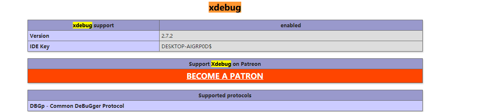

原文出处:本文由博客园博主浮生多少记提供。
原文连接:https://www.cnblogs.com/fushengduoshaoji/p/11487460.html
原文连接:https://www.cnblogs.com/fushengduoshaoji/p/11487460.html
一、首先安装xdebug
安装xdebug比 ，运行php -i >phpinfo.txt 或者 echo phpinfo();将全部信息贴到https://xdebug.org/wizard.php这个网站
如图：
然后会跳转到这个页面：
这是我电脑上php.ini的配置
[xdebug]
zend_extension ="D:/php/php7.3.8/ext/php_xdebug-2.7.2-7.3-vc15-nts-x86_64.dll"
xdebug.remote_enable = On
;启用性能检测分析
xdebug.profiler_enable = On
;启用代码自动跟踪
xdebug.auto_trace=On
xdebug.profiler_enable_trigger = On
xdebug.profiler_output_name = cachegrind.out.%t.%p
;指定性能分析文件的存放目录
xdebug.profiler_output_dir ="D:/php/tmp"
xdebug.show_local_vars=0
xdebug.idkey="PHPSTORM"
;配置端口和监听的域名
xdebug.remote_port=9000
xdebug.remote_host="localhost"
到此php这边配置完毕。
成功后的phpinfo

2.phpstorm对接xdebug
打开phpstorm，file—>settting,
接下来就可以为项目debug配置
右上角
6.jpg)
到此就可进行断点调试了
若想直接在phpstorm上进行api调试可以安装插件